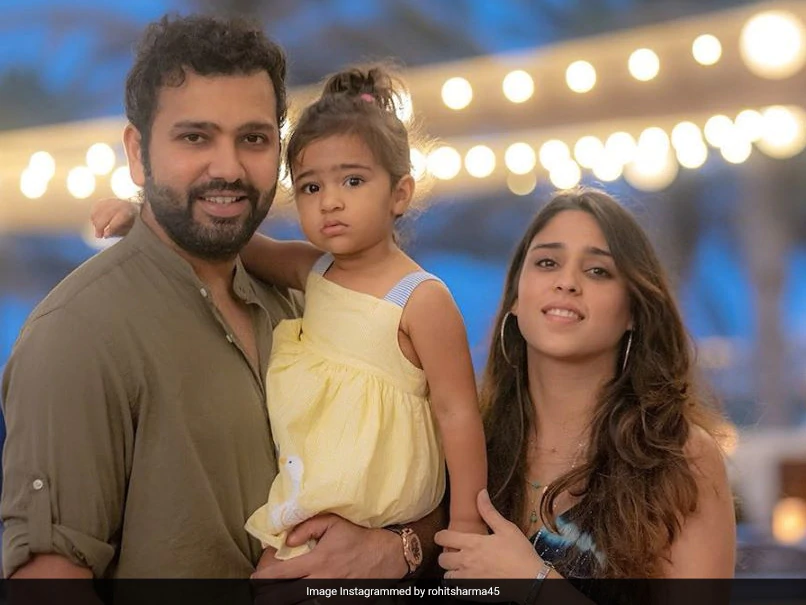

rohith
ritika
rohith family
rohith

Rohit Gurunath Sharma (born 30 April 1987) is an Indian international cricketer who currently captains the India national cricket team across all formats. He is a right-handed batsman. Considered one of the best batsmen of his generation and one of the greatest opening batters of all time,[4] Sharma is known for his timing, elegance, six-hitting abilities and leadership skills. Sharma holds several batting records which famously include most sixes in international cricket,[a] most double centuries in ODI cricket (3), most centuries at Cricket World Cups (7) and joint most hundreds in Twenty20 Internationals (5). Rohit Sharma is the first player to score 5 T20I centuries.[6] He plays for Mumbai Indians in IPL and for Mumbai in domestic cricket.
back to top
ritika

Ritika Sajdeh was born on 21 December 1987 in Mumbai, Maharashtra, India. She has been married to Rohit Sharma since 13 December 2015. They have one child.
back to top
samaira

Samaira Sharma was born on 30 December 2018 in Mumbai, Maharashtra, India.
Born
December 30, 2018
back to top